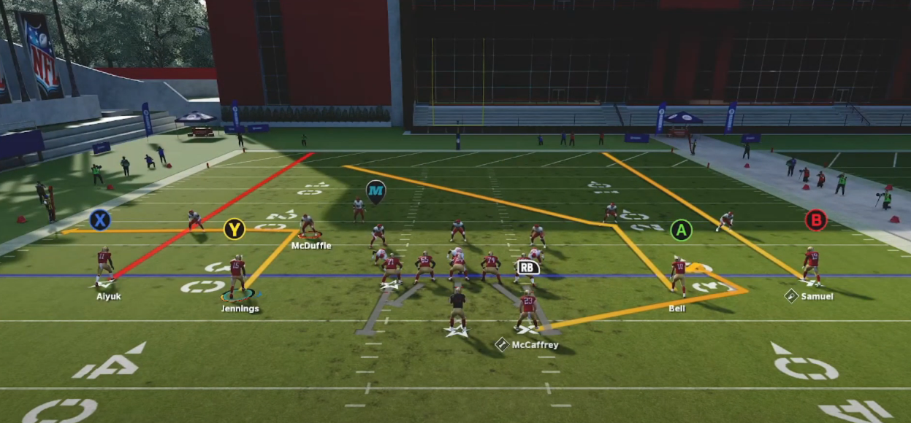
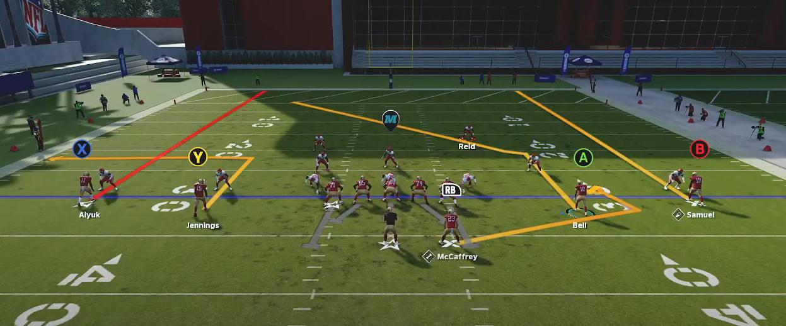
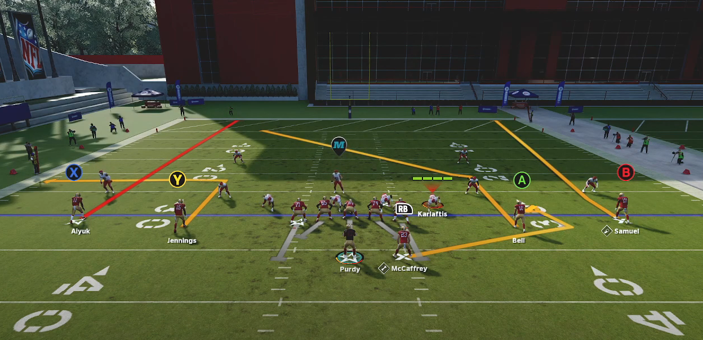
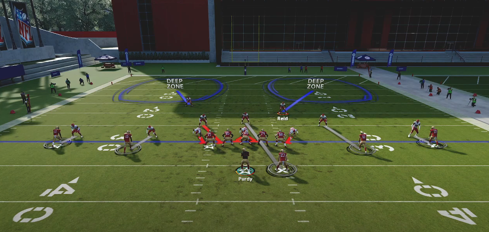
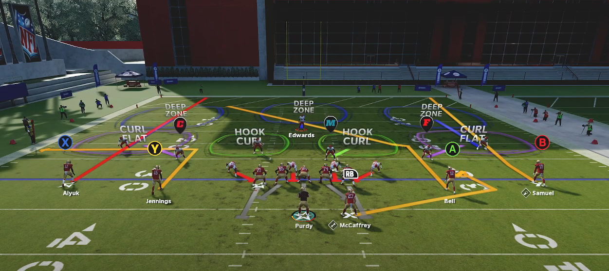
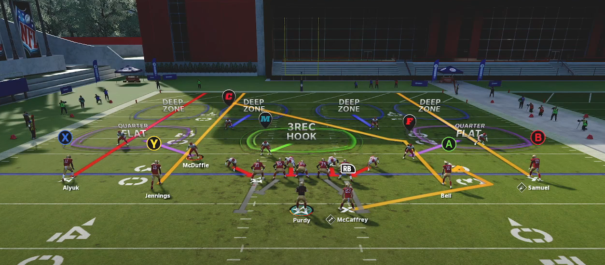
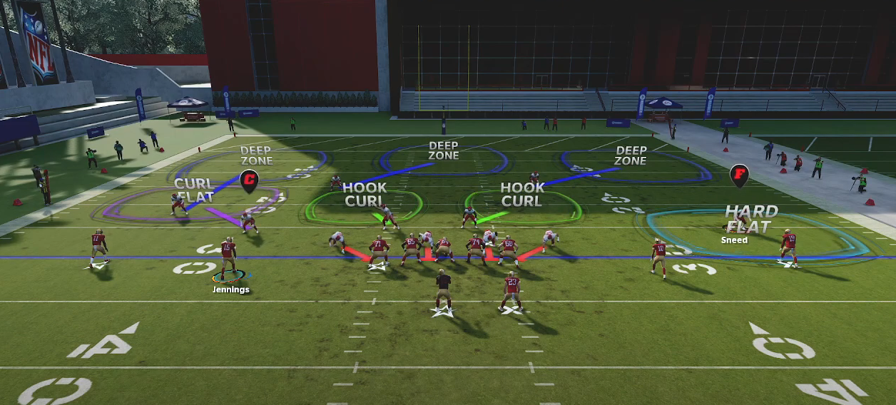

Identifying Coverages
:)
Presnap
Cover 0
- Pre Snap
- Safeties
- 10 yards off the football
- If man, will be eye to eye with the player they are manned up to
- Mainly slot receivers and TE's
- So if a Safety is not eye with someone they either have someone in the backfield or blitzing
- Corners
- Inside levarage on receivers
- All safeties and corners look as if they are one an 'even' level
- Safeties
- Post Snap
- Players will be either manned up or blitzing

Please go to Attacking Coverages: Cover 0 to leaern how to attack Cover 0.
Cover 1
- Pre Snap
- Safeties
- Single high safety
- Can come out in two high
- A big tell with this is if a safety is slightly lower than another
- More than not, the lower safety will be the 'robber' or 'hook zone'
- Corners
- Biggest tell is all corners will be eye to eye with their receiver
- Only defense in the game where everyone will be eye-to-eye
- Biggest tell is all corners will be eye to eye with their receiver
- All safeties and corners look as if they are one an 'even' level
- Safeties
- Post Snap
- 1 Safety highh
- Either all non-man players are blitzing or a safety/linebacker is playing some type of hook zone towards the middle of the field
- Although they are eye-to-eye, corners will play their man with outside levarage - The idea is to funnel everything to the safety and "robber" player (mike or safety)

Please go to Attacking Coverages: Cover 1 to leaern how to attack Cover 1.
Cover 2
- Pre Snap
- Safeties
- 2-high
- Corners
- 5 yards off the ball with outside levarage
- This only applies to Cover 2 so it's easy to recognize this coverage
- 5 yards off the ball with outside levarage
- Don't even need to look at anyone else on the field to recognize cover 2 if you just notice corners
- Safeties
- Post Snap
- 2 High safeties
- Sometimes you can have inverts where the corners play the 2-high and safeties come down and play the middle of the field

Please go to Attacking Coverages: Cover 2 to learn how to attack Cover .
Cover 2 Man
- Pre Snap
- Safeties
- 2-High safeties
- Corners
- Will align with inside levarage
- This also applies to slot corners and LBs
- Will align with inside levarage
- Corner alignment is similar to Cover 0
- The safety alignment lets us know it's Cover 2 man because they are aligned at 15 yards and not 10
- Safeties
- Post Snap
- 2 High Safeties
- Will never see an invert of this
- Cornerbacks will play with inside leverage

Please go to Attacking Coverages: Cover 2 Man to leaern how to attack Cover 2 Man.
Cover 3
- Pre Snap
- Safeties
- Single-high safety
- Corners
- Outside corners are shaded eye-to-eye
- Slot corners will be shaded with outside levarage
- Can tell the difference between this and cover 1
- Cover 1: slot defender shaded eye-to-eye
- Cover 3: slot defender has outside levarage
- Slot defender needs to get out into the flat fast
- Slot corner also wants to force you inside
- If they show two high you can typically look at the corners levarage to see if they're bluffing and actually in Cover 3
- Safeties
- Post Snap
- 3 Deep Zones
- Will often see the strong safety roll down

Please go to Attacking Coverages: Cover 3 to leaern how to attack Cover .
Cover4
- Pre Snap
- Safeties
- 2-high
- Corners
- Outside corners are aligned eye-to-eye and 8 yards off the ball
- Slot corners/ linebackers will be aligned with inside levarage
- Cover 4 you only have one hook zone
- So slot corner has to cover more field
- Aligning inside allows him to naturally cover tha
- All safeties and corners look as if they are one an 'even' level
- Safeties
- Post Snap
- Players will be either manned up or blitzing

Please go to Attacking Coverages: Cover 4 to leaern how to attack Cover .
Cover 3 Cloud
- Pre Snap
- A split field coverage: on side looks different than another
- One side will look exactly like cover 3
- The other side has a hard cloud/flat with an outside third by the deep safety
- The flat defender will be pressed in a hard flat or 5 yards off the ball
- Post Snap
- 3 Deep Zones
- Will see both safeties stay up
- Another difference from regular cover 3

Please go to Attacking Coverages: Cover 3 Cloud to leaern how to attack Cover .
Cover4 Match
- Pre Snap
- Same as Cover 4
- Post Snap
- Players will be either manned up or blitzing
Please go to Attacking Coverages: Cover to leaern how to attack Cover .
Cover 6
- Pre Snap
- One side is cover 4 and the other side is cover 2. 2 + 4 = 6
- This is match coverage
- Only time this won't match is if your opponent has set their zone drops on which negates match in the play
- Known as a "spot-drop" zone
- Only time this won't match is if your opponent has set their zone drops on which negates match in the play
- Typically, cover 4 is played to the field (or formation strength) and cover 3 is played to the boundary
- Post Snap
- Players will be either manned up or blitzing

Please go to Attacking Coverages: Cover 6 to leaern how to attack Cover 6.
Post Snap
- ashd
Importance of Isolating a Player
- Never Try to read the whole field on a given play
- To make quick decisions, isolate someone on the field
- From there, you can put routes on the field to manipulate that player
- As you go through your reads, you will read the next defender up as needed
- After several plays of isolating one defender, you can get a picture of the whole field
- Starting your game with a script can allow you to figure out the defense in one driver
- You can learn where defenders tend to be placed and the exploit the tendencies
Read the Second Level FIRST
- Read the second level players at the snap before evaluating any coverages
- Knowing if a blitz is coming will tell you a few things about the play:
- How much time you have to get the ball out
- Potential areas of the field that will be open
- Reveal the routes you should focus on
Reading Deep Safety
- Deep safety zones will run to the same spot regardless of which hasmark the offense is on
- Deep Halves will always run to the numbers
- Inside thirds will run to the dead center of the field
- Inside Quarters will always run between the numbers and hashmarks
Reading Outside CB zones
- Flat defenders will shuffle backwards with their eyes on the QB
- Deep outside zones will run up the field witrh their back turned to the QB
- Outside Third
- Outside Quarter
Reading Zones in the Second Level (Flats vs Hooks)
- If the defender drifts up the field, it is a hook zone
- If the defender runs to the flat, it is a flat zone
- Curl flat the DB/LB will play a bit slower and bump receivers
- Hard flats they run straight to the zone
Determining Man vs Zone
- Press Man will run step for step with the receiver the entire way
- Off Man Coverage will wait for your receiver until he makes a cut or threatens the defender deep
- Spot Drop Zone Coverage means defenders will run to a spot, not a receiver